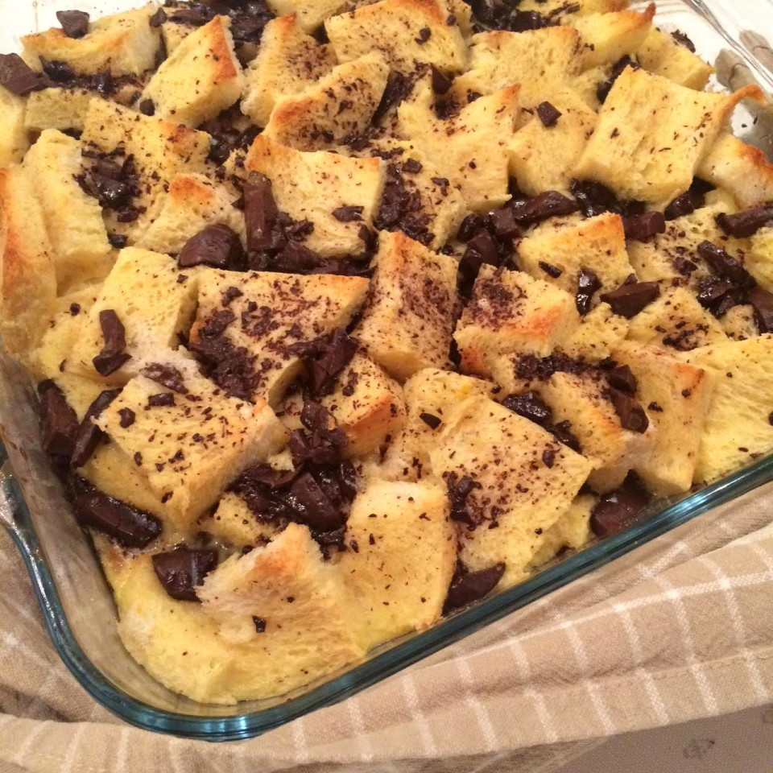

Bread Pudding Philosophy
Bread is one of the most common groceries you could find at home. Many of us keep it while it's fresh and then just throw it away when it's dry.
What if I told you, you could make one of the tastiest dishes from something so unappealing?
As a way of life, I believe we should pay close attention to the items we discard on a daily basis. are they recyclable? Can we find another use for them? Is it really the end of their lives?
What Do We Need?
All you need are the following ingredients:
- Old, dry bread
- Butter
- Raisins
- Eggs
- Milk
- Sugar
- Cinnamon
- Vanilla extract
- Creativity
If you have all of these ingredients, you're in for a real treat.
Quantities
| Ingredient |
Measurement |
Amount |
| Dry Bread |
Slices |
6 |
| Butter |
Tablespoons |
2 |
| Raisins |
Cup |
1/2 |
| Eggs |
|
4 |
| Milk |
Cups |
2 |
| White Sugar |
3/4 |
| Cinnamon |
Teaspoon |
1 |
| Vanilla extract |
1 |
Lets get to work
- Preheat oven to 350 degrees F.
- Cut break into squares, and drizzle melted butter on top
- Mix eggs, milk, sugar, cinnamon and vanilla. beat until well mixed.
- Pour over bread.
- Bake for 45 minutes until a brown layer is created on top.
This is what it should look like when it's ready:

Want more recipes and updates? Join our mailing list-
Site to compare
I feel like the over site is obviously nicer looking. in mine there's a long list of titles, whether than sections top to bottom as well as right to left.
the information is centered and the colors give it a more inviting look.